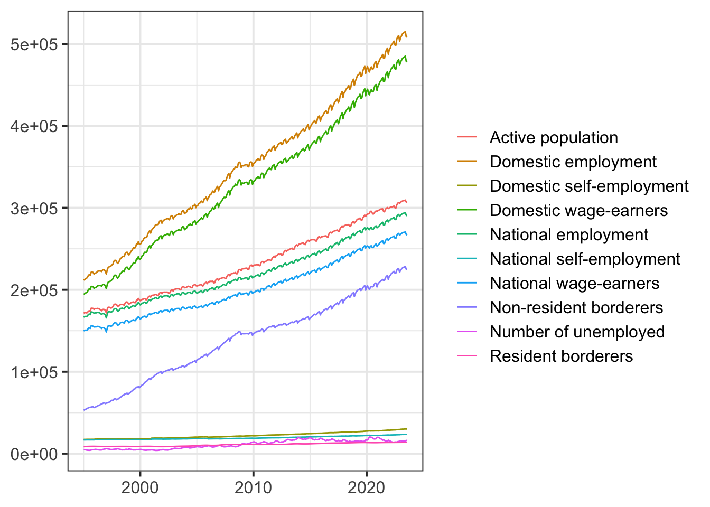
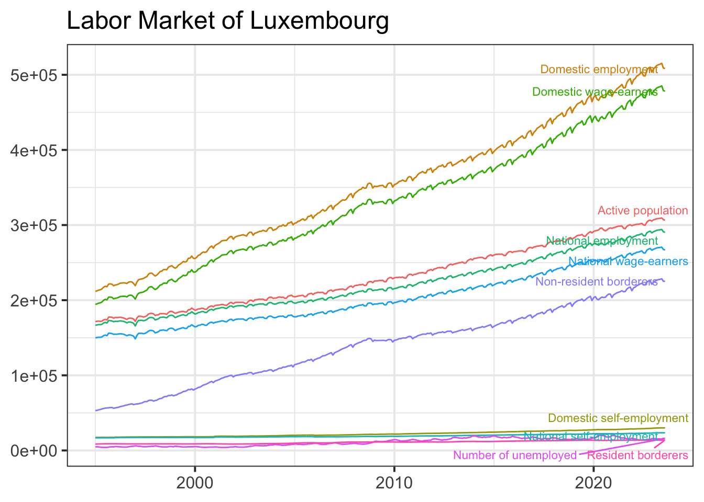
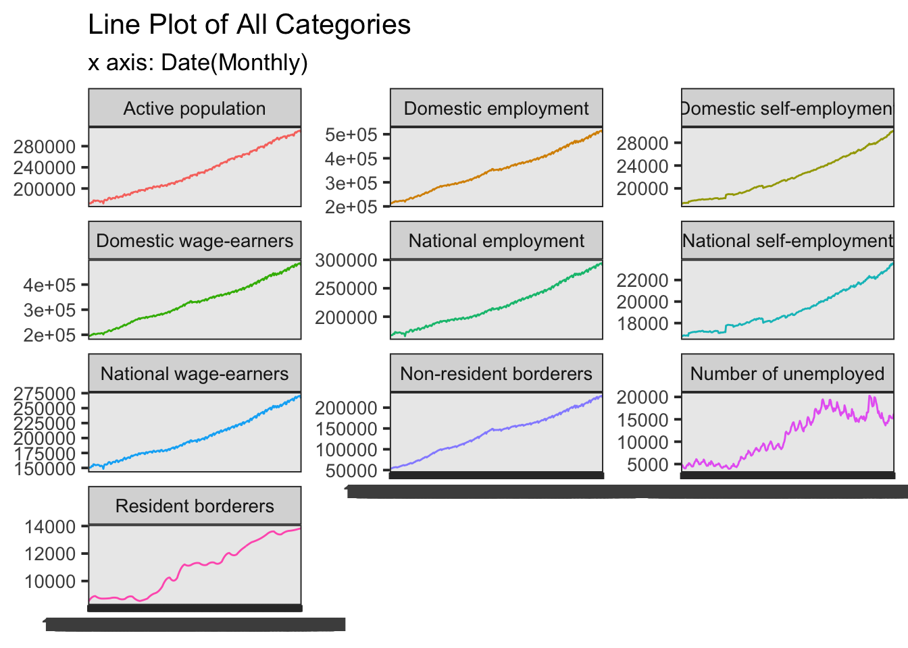
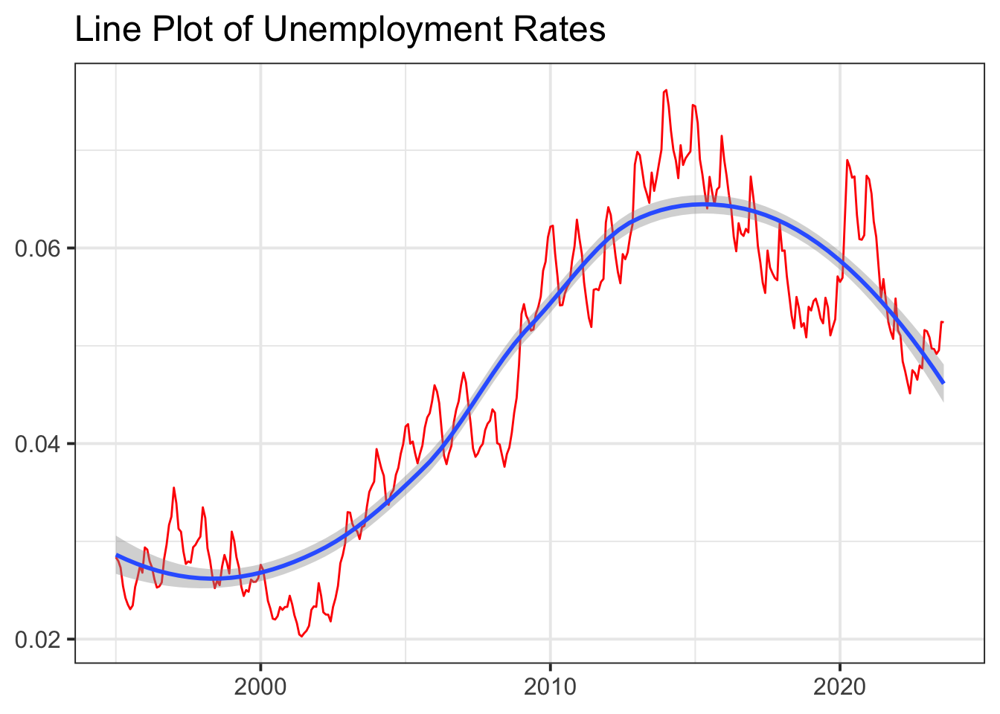
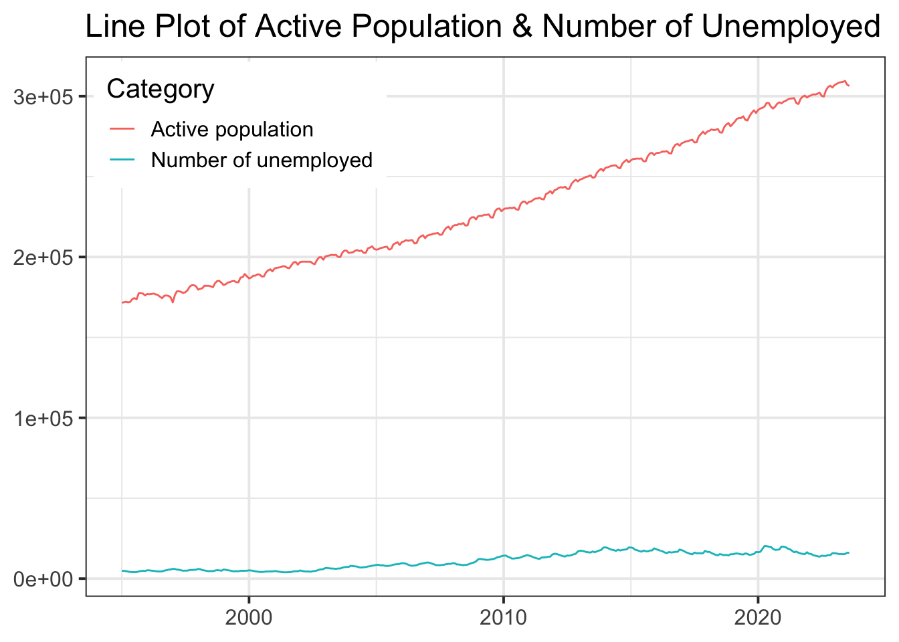
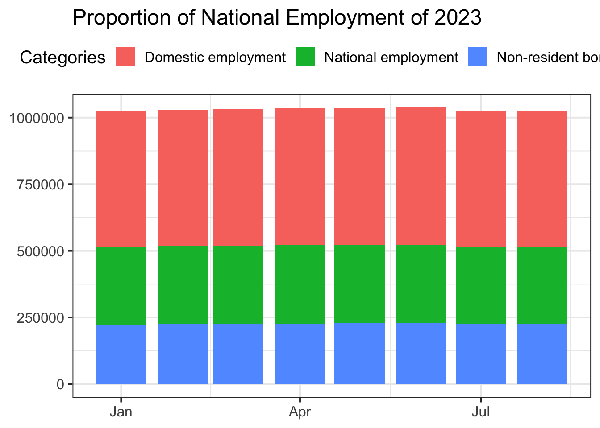
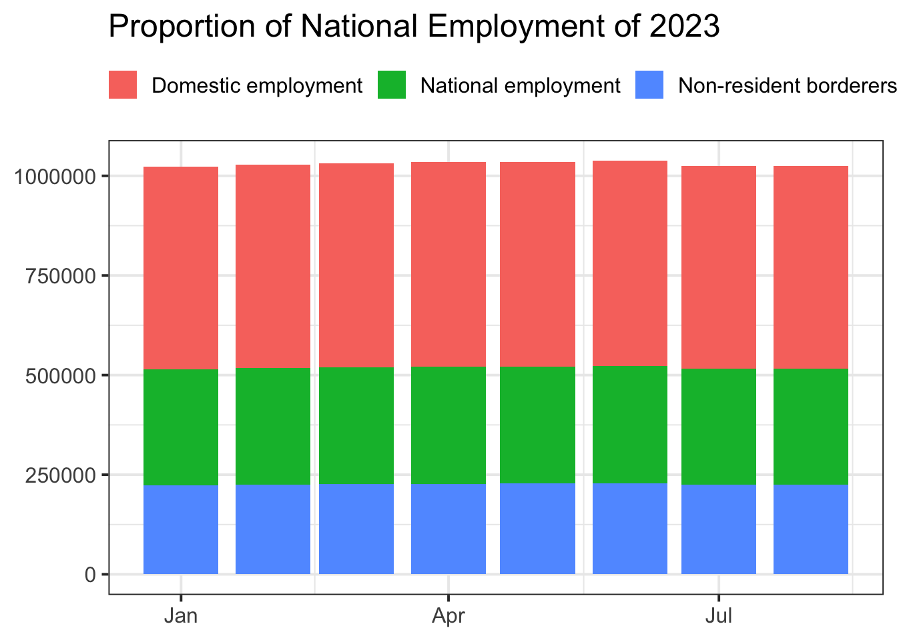

Current Source: Eurostat https://statistiques.public.lu/en.html https://lustat.statec.lu/vis?fs[0]=Th%C3%A8mes%2C1%7CPopulation%20et%20emploi%23B%23%7CMarch%C3%A9%20du%20travail%23B5%23&pg=0&fc=Th%C3%A8mes&df[ds]=ds-release&df[id]=DF_B3010&df[ag]=LU1&df[vs]=1.0&pd=2015-01%2C2022-12&dq=M.&ly[cl]=SPECIFICATION&ly[rw]=TIME_PERIOD&lo=12
Original Source: Data collected from the labor market
Description: Employment and unemployment per month
This is a monthly data collected from 1995.01 to 2023.08, containing information about labour market in Luxembourg. For example, it contains number of unemployment, number of active population, number of self employment, etc.
Import Data
For simplification, the column names are transfered as follows: Time period - DATE Resident borderers - RB Non-resident borderers - NRB National wage-earners - NWE Domestic wage-earners - DWE National self-employment - NSE Domestic self-employment - DSE National employment - NE Domestic employment - DE Number of unemployed - NUE Active population - AP
# Load librarieslibrary(openxlsx)# Set working directorysetwd("/Users/liubixuan/Documents/Data_Visualization/Project_DV")# Import Excel file datadf <-read.xlsx("data.xlsx")# Rename columnscolnames(df) <-c("Date", "Resident borderers", "Non-resident borderers", "National wage-earners", "Domestic wage-earners", "National self-employment", "Domestic self-employment", "National employment", "Domestic employment", "Number of unemployed", "Active population")# Convert date column to Date formatdf$Date <-as.numeric(df$Date)df$Date <-as.Date(df$Date, origin ="1899-12-30")# Show first 10 rowshead(df, n =10)
df_rs <-read.xlsx("data_reshaped.xlsx")# Rename columnscolnames(df_rs) <-c("Category", "Date","Value")# Convert date column to Date formatdf_rs$Date <-as.numeric(df_rs$Date)df_rs$Date <-as.Date(df_rs$Date, origin ="1899-12-30")# Show first 10 rowshead(df_rs, n =10)
Category Date Value
1 Active population 1995-01-01 171547.9
2 Active population 1995-02-01 171880.8
3 Active population 1995-03-01 172197.7
4 Active population 1995-04-01 171821.7
5 Active population 1995-05-01 172111.5
6 Active population 1995-06-01 173850.9
7 Active population 1995-07-01 174447.6
8 Active population 1995-08-01 173665.7
9 Active population 1995-09-01 177459.8
10 Active population 1995-10-01 177470.1
ggplot(df_rs, aes(x = Date, y = Value)) +geom_line(aes(color = Category)) +labs(x =NULL, y =NULL, color =NULL)

library(dplyr)
Attaching package: 'dplyr'
The following objects are masked from 'package:stats':
filter, lag
The following objects are masked from 'package:base':
intersect, setdiff, setequal, union
library(ggrepel)data_ends <- df_rs |>filter(Date =="2023-08-01")ggplot(df_rs, aes(x = Date, y = Value, color = Category, group = Category)) +geom_line() +geom_text_repel(aes(label = Category), data = data_ends, nudge_x =0.35, size =3 ) +labs(title ="Labor Market of Luxembourg",x=NULL, y=NULL) +theme(legend.position ="none")

Small Multiples
df_rs |>ggplot(aes(x =as.factor(Date), y = Value, colour = Category)) +geom_line(aes( group = Category)) +labs(title ="Labor Market of Luxembourg",subtitle ="x axis: Date(Monthly)",fill =NULL,x =NULL,y =NULL) +facet_wrap(vars(Category), nrow =4, scales ="free_y") +theme(legend.position ="none", text =element_text(size =13))

Unemployment Rates
But mainly, we are interested in Unemployment Rates. Unemployment rates = Number of unemployment / Active population
`geom_smooth()` using method = 'loess' and formula = 'y ~ x'

# Plot with NUE & APdf_rs |>filter(Category %in%c("Number of unemployed", "Active population")) |>ggplot(aes(x = Date, y = Value, color = Category)) +geom_line() +labs(title ="Active Population & Number of Unemployed",x =NULL,y =NULL,color =NULL) +theme(legend.position =c(0.01, 0.99), legend.justification =c(0, 1))

Improve y scaling.
df |>ggplot(aes(x = Date)) +geom_line(aes(y =`Number of unemployed`), color ="blue") +geom_line(aes(y =`Active population`*0.05), color ="red") +labs(title ="Active Population & Number of Unemployed",x =NULL,y =NULL,color =NULL) +scale_y_continuous(name ="Number of Unemployed(Blue)", sec.axis =sec_axis(~.*20, name ="Active Population(Red)")) +theme(legend.position =c(0.01, 0.99), legend.justification =c(0, 1))

Bar Plot
National Employment & Domestic Employment
library(lubridate)
Attaching package: 'lubridate'
The following objects are masked from 'package:base':
date, intersect, setdiff, union
library(tidyr)
Attaching package: 'tidyr'
The following object is masked from 'package:reshape2':
smiths
df |>pivot_longer(cols =c("Non-resident borderers","National employment","Domestic employment" ),names_to ="Categories",values_to ="Values" ) |>filter(year(Date) ==2023) -> df_rs_selectggplot(df_rs_select) +geom_col(aes(x = Date,y = Values,fill = Categories)) +labs(title ="Proportion of National Employment of 2023", x =NULL,y =NULL,fill =NULL) +theme(legend.position ="top",legend.direction ="horizontal",legend.box ="horizontal")

Do the same thing annually. Annual data is represented by the data captured at the end of December of each year.
# Create a new data frame containing annual data.df |>pivot_longer(cols =c("Non-resident borderers","National employment","Domestic employment" ),names_to ="Categories",values_to ="Values" ) |>filter(month(Date) ==12) -> df_anggplot(df_an) +geom_col(aes(x = Date,y = Values,fill = Categories)) +labs(title ="Proportion of annual National Employment, 1995-2023", x =NULL,y =NULL,fill =NULL) +theme(legend.position =c(0.01, 0.99), legend.justification =c(0, 1))